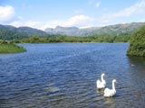
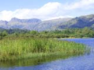
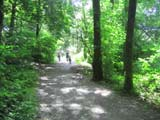
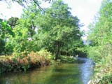
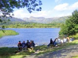
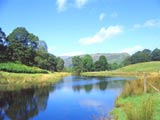
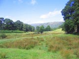
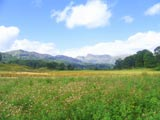
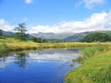

Elter Water Information and Photography
Elter Water is the smallest of the 16 lakes at only half a mile long whose wooded shores and thick clusters of reeds support a variety of wildfowl.
It is a popular walking spot, situated between Skelwith Bridge and the village of Great Langdale on the narrow B5343. Across the road from a conveniently placed car park, a path leads down through the trees before opening out on to meadowland and the lower reaches of the lake.
This same path carries on to the main waters and vantage points giving views of the not too distant Langdale Pikes. At this point, the path enters a heavily wooded area again, obscuring a clear sight of the lake. However, those who continue the walk to Great Langdale can, as they progress alongside a fast flowing river, enjoy more open aspects of the grazing lands and surrounding backdrop of hills.
It is a delightful place for a family stroll along a level non rocky route suitable for the young, and the not so young.
Local bus companies offer a limited number of winter and summer services from Windermere and Ambleside. Tourist Information Centres will provide details.
Click on the photographs for a larger image.
All images open in a new window.
All images are 800x 600 resolution and may take a long time to download on slower internet connections.
For larger images (1024x768), please visit our
computer wallpapers section.
 |
 |
 |
 |
 |
 |
 |
 |
 |